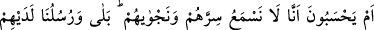
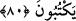
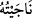

istiyorlar? Tuzağa düşecek olanlar, o inkâr edenlerin ta kendileridir” (et-Tûr,
52/42) buyrulmaktadır. Nitekim müşrikler ve kâfirler toplantılarında Peygamberimiz
(s.a.)’in işleri hakkında bir takım istişâreler yapıp kararlar alıyorlardı.
Fethurrahmân’da şöyle denilmiştir: Müşriklerin bahsedilen kararları, Daru’n-
nedve’de Peygamberimiz (s.a.)’in öldürülmesi hakkında ve daha diğer konularda
toplanıp aldıkları kararlar gibidir.
Âyette işâret edildiği üzere insanların verdikleri kararlar ve yaptıkları işler çoğu
zaman kendi aleyhlerine dönmektedir. Almış oldukları bu kararlar sonuç vermemekte,
onların tedbir ve takdirleri çizgisinde gerçekleşmemektedir. İşte bu durum, bütün işleri
ve kâinatı sevk ve idâre eden bir sâni’in; bir yaratıcı ve yöneticinin varlığına en açık bir
delildir.
80. Yoksa onlar, bizim kendilerinin sırlarını ve gizli konuşmalarını işitmediğimizi
mi sanıyorlar? Hayır, öyle değil; işitiriz ve yanlarındaki elçilerimiz (hafaza
melekleri) de yazmaktadırlar.
“Yoksa onlar, bizim kendilerinin sırlarını,” içlerinde kurgulamış oldukları hîlelerini,
tuzaklarını,
entrikalarını
“ve”
aralarında
böbürlenip
danışma
yoluyla
gerçekleştirdikleri “gizli konuşmalarını işitmediğimizi mi sanıyorlar?” Zâten onlar
hakkı alenî olarak yalanlayıcıdırlar. “Hayır, öyle değil; işitiriz,” bunlardan haberdar
oluruz; “yanlarındaki” yaptıklarını kayda alıp onlardan hiç ayrılmayan “elçilerimiz
(hafaza melekleri) de” onlardan meydana gelen her sözü, işi, sırrı ve aralarındaki
konuşmaları “yazmaktadırlar.” Elbette onların sır ve meşveretleri de bu yazılıp
kaydedilenler cümlesindendir. Sonra kıyâmette bütün bunlar onlara arz ve takdîm
edilecektir. Onların gûyâ sır ve gizlilik olarak düşündükleri bu hususlar bizim yazıcı
meleklerimize gizli kalmazsa, bütün sır, fısıltı ve gizli meşveretleri bilen Yüce Allah’a
nasıl gizli kalabilir ki?
Arapçada, gizli ve fısıltılı konuştum, sır yaptım, gizledim anlamında “/nâceytühü”
denilir. Bunun aslı, yeryüzünde çevreden yüksek, ayrı, boş ve müsait bir mekânda
muhataplarıyla baş başa kalarak bir takım gizli istişârelerde bulunmaktır.
et-Te’vilâtu’n-Necmiyye’de şöyle denilmektedir: Allah Teâlâ onları, Allah’tan gâfil
oldukları için bizzat kendisinin hallerini işitmesiyle ve meleklerin de onların amellerini
yazmış olmasıyla tehdid etmiştir. Şâyet Allah’tan haberdâr olsalardı, Allah onları
kendinden başkasıyla tehdid etmezdi. Belirtmek gerekir ki, amellerinin yazılıp hesabının
sorulacağını bilen kimsenin, hesap sorulacağı endişesiyle günahları az olur.
Ebûbekir b. Tâhir şöyle demiştir: Allah Teâlâ, kullarından bir topluluğu kendi